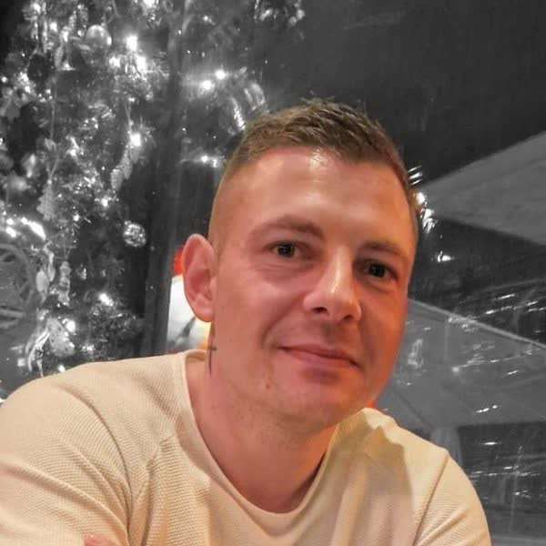

Team
Auszubildende und Lernende aus der Pflege, mit eigenen Beiträgen und eigener Sicht.

Betreiber des Blogs, Auszubildender zum Pflegefachmann.
Über mich
Hier erscheinen bald die ersten Mitschreibenden, jede und jeder mit Bild, eigener Seite und Link.
Mitmachen